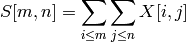

register¶
PointCorrespondence¶
- class supreme.register.PointCorrespondence(ref_feat_rows, ref_feat_cols, target_feat_rows, target_feat_cols, **args)¶
Bases: object
Estimate point correspondence homographies.
Methods
RANSAC([mode]) Mode can be ‘direct’ or ‘iterative’. estimate() - __init__(ref_feat_rows, ref_feat_cols, target_feat_rows, target_feat_cols, **args)¶
- RANSAC(mode='direct')¶
- Mode can be ‘direct’ or ‘iterative’.
- estimate()¶
| supreme.register.affine_tm | |
| supreme.register.correspond | |
| supreme.register.dense_MI | |
| supreme.register.fft_corr | |
| supreme.register.gauss | |
| supreme.register.joint_hist | |
| supreme.register.logpolar | |
| supreme.register.lp_patch_match | |
| supreme.register.mutual_info | |
| supreme.register.ncc | |
| supreme.register.patch_match | |
| supreme.register.phase_corr | |
| supreme.register.radial_sum | |
| supreme.register.refine | |
| supreme.register.sat | |
| supreme.register.sat_sum | |
| supreme.register.sparse | |
| supreme.register.window_wrap |
affine_tm¶
- supreme.register.affine_tm(theta=0, tx=0, ty=0, scale=None, scale_x=None, scale_y=None)¶
Return the transformation matrix for an affine transformation.
Parameters: theta : float
Rotation angle in radians.
tx, ty : float
X and Y translations.
scale : float
Scaling in both the X and the Y directions. Defaults to 1.
scale_x : float
Scaling in the X direction. Cannot be used together with scale.
scale_y : float
Scaling in the Y direction. Cannot be used with scale.
Returns: M : ndarray of float
Transformation matrix with the supplied parameters. Can be used to transform any homogeneous coordinate p = [[x, y, 1]].T by np.dot(M, p).
correspond¶
- supreme.register.correspond(fA, A, fB, B, win_size=9)¶
Given coordinates of features in two images, determine possible correspondences.
Parameters: fA : list of tuple (x,y)
Coordinates of the features in the source image.
A : (m,n) ndarray of type uint8
Source image.
fB : list of tuple (x,y)
Coordinates of the features in the target image.
A : (m,n) ndarray of type uint8
Target image.
Returns: matches : list
[((coord_source), (coord_target)), ...]
dense_MI¶
- supreme.register.dense_MI(A, B, p=None, levels=4, fast=False, std=1, win_size=5, translation_only=False)¶
Register image B to A, using mutual information and an image pyramid.
Parameters: A, B : ndarray of uint
Images to register.
levels : int
Number of levels in the image pyramid. Each level is downsampled by 2.
p : list of floats, optional
The five initial parameters passed to the optimiser. These are rotation angle, skew in the X direction, skew in the Y direction, translation in x and translation in y.
fast : bool
If true, the histogram is not smoothed.
std : float
Standard deviation used by the smoothing window.
win_size : int (odd)
Window size of the smoother.
translation_only : bool
Whether to use a translation-only motion model. By default, a full homography is estimated.
Returns: M : (3,3) ndarray of float
Transformation matrix that transforms B to A.
gauss¶
- supreme.register.gauss(size=5, std=1.0)¶
Discretised Gaussian window.
Parameters: size : int
The generated window has dimensions (size, size).
std : float
Standard deviation.
Returns: w : (size, size) ndarray
Discretised Gaussian window.
joint_hist¶
- supreme.register.joint_hist()¶
Estimate the joint histogram of A and B.
Parameters: A, B : (M, N) ndarray of uint8
Input images.
L : int
Number of grey-levels in histogram.
win_size : int
Width of Gaussian window used in the approximation. A larger window can represent the Gaussian kernel somewhat more accurately.
std : float
Standard deviation of the Gaussian used in the Parzen estimation. The higher the standard deviation, the smoother the resulting histogram. win_size must be made large enough to accommodate an increased standard deviation.
fast : bool
Calculate the classical histogram, instead of using a Parzen Window. Fast, but does not estimate the PDF as accurately.
Returns: H : (256, 256) ndarray of float
Estimation of the joint probability density function between A and B.
logpolar¶
- supreme.register.logpolar(ref_img, img_list, window_shape=None, angles=181, variance_threshold=0.089999999999999997, peak_thresh=5)¶
- Register the given images using log polar transforms.
lp_patch_match¶
- supreme.register.lp_patch_match(a, b, angles=360, Rs=None, plot_corr=False)¶
Align two patches, using the log polar transform.
Parameters: a : ndarray of uint8
Reference image.
b : ndarray of uint8
Target image.
angles : int
Number of angles to use in log-polar transform.
Rs : int
Number of radial samples used in the log-polar transform.
plot_corr : bool, optional
Whether to plot the phase correlation coefficients.
Returns: c : float
Peak correlation value.
theta : float
Estimated rotation angle from a to b.
scale : float
Estimated scaling from a to b.
mutual_info¶
- supreme.register.mutual_info()¶
Given the joint histogram of two images, calculate their mutual information.
Parameters: H : (256, 256) ndarray of double
Returns: S : float
Mutual information.
ncc¶
- supreme.register.ncc()¶
Circular normalised cross-correlation of source and template image.
Parameters: imgS : ndarray of uint8
Source image.
imgT : ndarray of uint8
Template image. The dimensions of the template image must be smaller or equal to that of the source.
Returns: ncc : ndarray of float
Normalised correlation coefficients, of the same shape as the source image.
Notes
While integral images are used, not all the suggestions made in [2] have been investigated.
References
[R13] J.P. Lewis, Fast Normalized Cross-Correlation, 1995, http://www.idiom.com/~zilla/. [R14] D. Tsai and C. Lin, “Fast normalized cross correlation for defect detection,” Pattern Recognition Letters, vol. 24, 2003. [R15] F.C. Crow, “Summed-area tables for texture mapping,” ACM SIGGRAPH Computer Graphics, vol. 18, 1984, pp. 207-212.
patch_match¶
- supreme.register.patch_match(a, b, angles=360, Rs=None, plot_corr=False)¶
Align two patches, using the log polar transform.
Parameters: a : ndarray of uint8
Reference image.
b : ndarray of uint8
Target image.
angles : int
Number of angles to use in log-polar transform.
Rs : int
Number of radial samples used in the log-polar transform.
plot_corr : bool, optional
Whether to plot the phase correlation coefficients.
Returns: c : float
Peak correlation value.
theta : float
Estimated rotation angle from a to b.
scale : float
Estimated scaling from a to b.
phase_corr¶
- supreme.register.phase_corr(A, B)¶
Phase correlation of two images.
Parameters: A, B : (M,N) ndarray
Input images.
Returns: out : (M,N) ndarray
Correlation coefficients.
Examples
Set up test data. One array is offset (10, 10) from the other.
>>> x = np.random.random((50, 50)) >>> y = np.zeros_like(x) >>> y[10:, 10:] = x[0:-10, 0:-10]
Correlate the two arrays, and ensure the peak is at (10, 10).
>>> out = phase_corr(y, x) >>> m, n = np.unravel_index(np.argmax(out), out.shape) >>> print m, n (10, 10)
radial_sum¶
- supreme.register.radial_sum()¶
Sum the elements of an array outward along 360 directions (1-degree increments).
Parameters: img : (M,N) ndarray of double
Input image.
Returns: R : (360,) ndarray of double
Summed elements of img along each of 360 directions. The central element, which belongs to all directions, is discarded.
Examples
>>> x = np.array([[2, 0, 1], ... [0, 5, 0], ... [3, 0, 4]], dtype=np.double) >>> R = radial_sum(x) >>> R[[45, 135, 225, 315]] == [1, 2, 3, 4]
refine¶
- supreme.register.refine(reference, target, M_ref, M_target)¶
- Refine registration parameters iteratively.
sat¶
- supreme.register.sat()¶
Summed area table / integral image.
The integral image contains the sum of all elements above and to the left of it, i.e.:

Parameters: X : ndarray of uint8
Input image.
Returns: S : ndarray
Summed area table.
References
[R16] F.C. Crow, “Summed-area tables for texture mapping,” ACM SIGGRAPH Computer Graphics, vol. 18, 1984, pp. 207-212.
sat_sum¶
- supreme.register.sat_sum()¶
Using a summed area table / integral image, calculate the sum over a given window.
Parameters: sat : ndarray of uint64
Summed area table / integral image.
r0, c0 : int
Top-left corner of block to be summed.
r1, c1 : int
Bottom-right corner of block to be summed.
Returns: S : int
Sum over the given window.
sparse¶
- supreme.register.sparse(ref_feat_rows, ref_feat_cols, target_feat_rows, target_feat_cols, **kwargs)¶
Compatibility wrapper. Calculate the PointCorrespondence homography which maps reference features to target features.
See also: PointCorrespondence
Parameters: ref_feat_rows, ref_feat_cols : array of floats
Coordinates in the reference image.
target_feat_rows, target_feat_cols : array of floats
Coordinates in the target image.
mode : {‘direct’, ‘iterative’, ‘RANSAC’}, optional
Method used to estimate the correspondences. See also PointCorrespondence.
RANSAC_mode : {‘direct’, ‘iterative’}, optional
Whether RANSAC should estimates homographies directly or iteratively.
window_wrap¶
- supreme.register.window_wrap()¶
Calculate the corner-coordinates of the sub-windows resulting when wrapping one window around another.
No wrapping: .________. | ___ | | | | | | |___| | |________| Column wrapping: .________. |_ _| | | | | |_| |_| |________| Row wrapping: .________. | |___| | | | | .___. | |__|___|_| Diagonal wrapping: .________. |__| |__| | | |__. .__| |__|__|__|
Notes
The algorithm works as follows:
- Assume that all wrappings take place
- Calculate the corners for each resulting window
- Remove windows with negative coordinates
- Clip all coordinates to the clipping window boundary